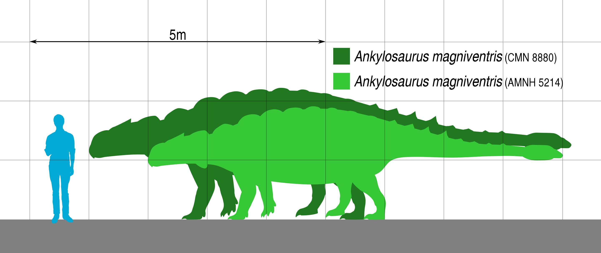

For almost my entire life I have thought about Dinosaurs on a regular basis. It's time I started a fan page for them, a place where I can preserve various Dinosaur questions and thoughts.
Right now the Dinosaur that I'm most interested in are Ankylosaurus and Tyrannosaurus Rex 